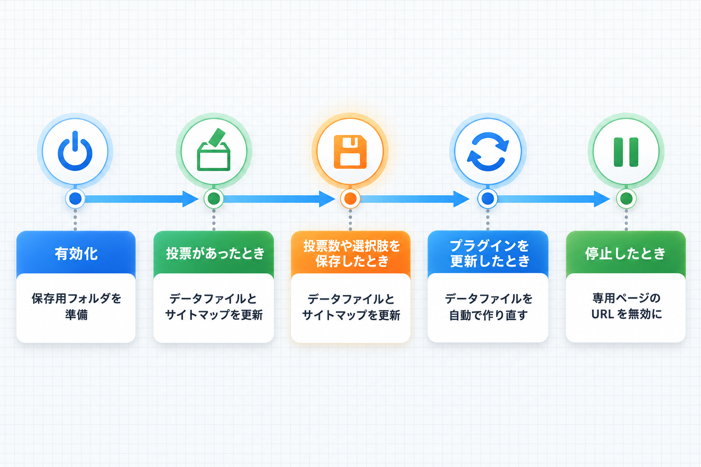
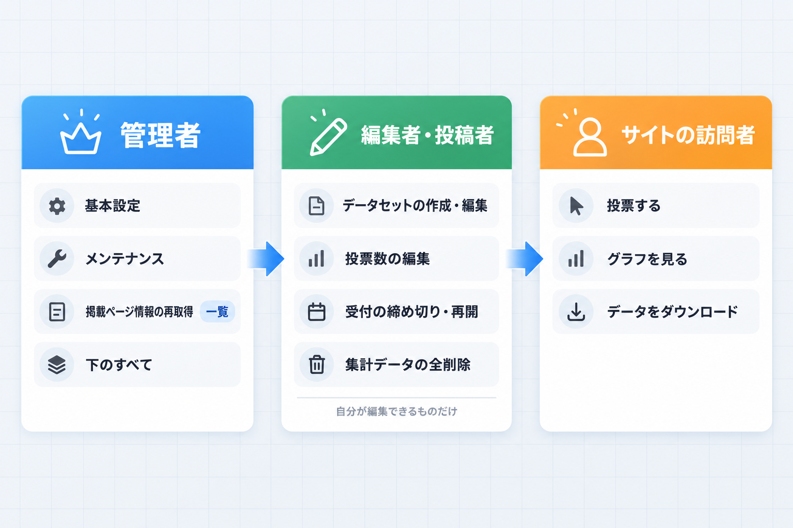

自動処理と権限
このプラグインが利用者の操作なしに行う処理と、各操作に必要な権限（WordPress のユーザー権限グループ）をまとめます。
自動で行われる処理

| タイミング | 行われること | 補足 |
|---|---|---|
| 有効化したとき | データファイルの保存用フォルダを作る。基本設定が無ければ既定値で保存する。/datasets/ 以下の URL を使えるようにする | — |
| 投票があったとき（公開中） | そのデータセットのデータファイル5種とサイトマップを更新 | 下書きのデータセットではファイルを作りません |
| 編集画面で選択肢か投票数を変えて保存したとき（公開中） | 同上 | 下書きのまま保存した場合は作りません |
| データセットを公開したとき | データファイル5種を作り、サイトマップに載せる | 予約投稿が公開されたときも同じです |
| データセットを下書き・非公開・ゴミ箱にしたとき | データファイル5種を削除し、サイトマップから外す | もう一度公開すると作り直します |
| 集計データを全削除したとき（公開中） | ファイルを0票の内容で作り直し、サイトマップを更新 | — |
| 旧版から更新したとき | 足りない設定項目を既定値で補う。旧版で記録した投票日時・リセット日時に含まれていたタイムゾーン分のずれを、1回だけ取り除いて基準をそろえる。1.0.5 以前からの更新では、公開中のすべてのデータファイルとサイトマップを、保存されている投票データから1回だけ作り直す | 作り直しは、更新の約30秒後のバックグラウンド処理と、管理者が管理画面を開いたときの両方で試みます。全部そろうまで5分おきに最大5回試します。一度終わると、以後の更新では作り直しません。投票データ自体は変わりません |
| 記事を保存したとき | 一覧の「使用記事」で並べ替えるための件数を更新（最大24時間に1回） | — |
| 停止したとき | /datasets/ 以下の URL を無効にし、予定していた自動の作り直しを取り消す | 投票データ・設定・データファイル・サイトマップのファイルは残ります |
| 削除したとき | 専用の削除処理はありません | 投票データ・設定・データファイル・サイトマップのファイルは残ります |
保存して使い回す情報
| 情報 | 保存期間 | すぐ更新したいとき |
|---|---|---|
| 一覧の「使用記事」、編集画面の「掲載中のページ」 | 最大1時間 | 一覧の「掲載ページ情報を再取得」、編集画面の「掲載ページの情報を再取得」 |
| 記事のグラフ | 保存しません（ページを開くたびに最新の集計を読み込みます） | — |
操作に必要な権限

データセットは WordPress の「投稿」と同じ権限の仕組みで管理されます。下の表の「通常の権限グループ」は WordPress の標準設定の場合です。
| 操作 | 通常の権限グループ |
|---|---|
| 左メニューとデータセット一覧を見る、データセットを作る | 寄稿者以上 |
| データセットを公開する | 投稿者以上 |
| 他の人が作ったデータセットを編集する | 編集者以上 |
| 編集画面の各項目の保存（選択肢・投票数・データセット情報・受付） | そのデータセットを編集できる人 |
| 一覧の「受付を締め切る」「受付を再開」 | そのデータセットを編集できる人 |
| 「集計データを全削除する」 | そのデータセットを編集できる人 |
| 編集画面の「掲載ページの情報を再取得」 | 寄稿者以上 |
| 一覧の「掲載ページ情報を再取得」 | 管理者 |
| 「基本設定」タブ、基本設定画面、設定の保存、メンテナンスの3つのボタン | 管理者 |
| 投票する、グラフを見る、データをダウンロードする（公開中のデータセット） | だれでも（ログイン不要） |
権限を変更しているサイト
権限を管理するプラグインなどで権限グループの内容を変えている場合は、上の表と異なることがあります。